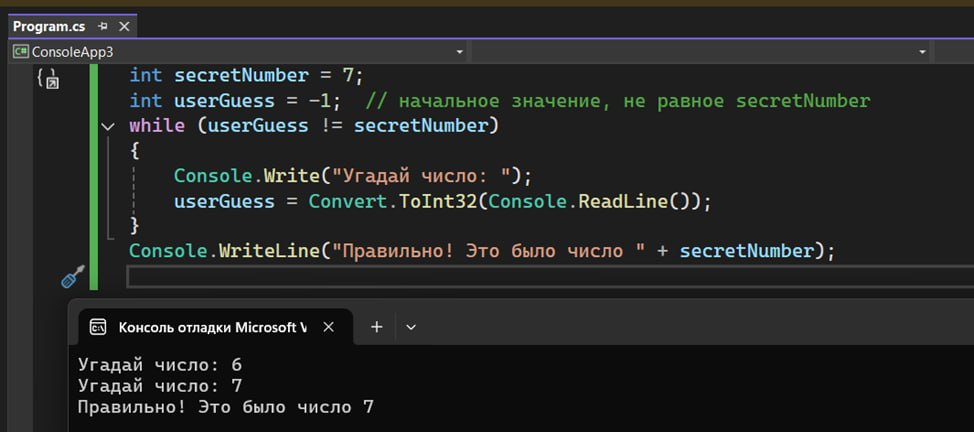
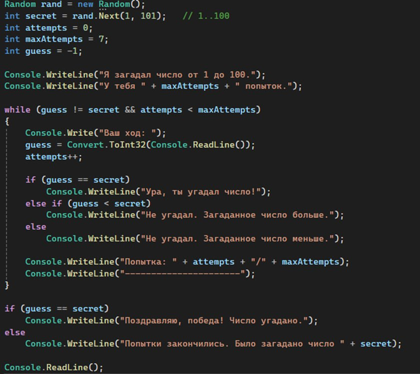
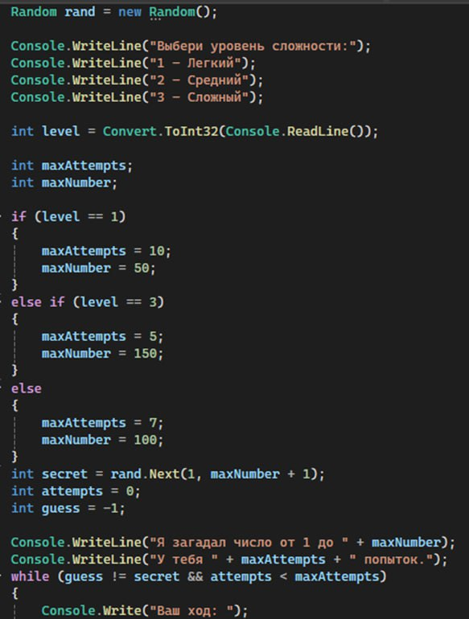
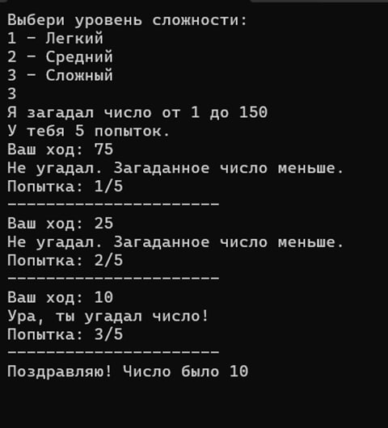

Блок 1 — Повторение прошлого урока
Задай эти вопросы детям перед началом 👇
rand.Next(1, 101)?
= и ==?Console.ReadLine()?
Новая тема — Цикл while
На прошлом занятии у нас не было возможности дать игроку несколько попыток — программа спрашивала число один раз и на этом всё. Но в игре интереснее позволить угадывать снова и снова, пока не получится. Для этого нам нужен цикл.
Цикл позволяет повторять набор команд многократно. Самый простой цикл — while — выполняет свои действия до тех пор, пока условие истинно. Слово «while» как раз переводится как «пока».
Как это понять? Представь себе жизненную ситуацию: мама говорит тебе: «Убери комнату!» не один раз, а каждый час, пока ты не приберёшься 🤨 Это и есть цикл: одно и то же действие («напоминание») повторяется, пока условие (комната не убрана) остаётся истинным. Как только комната станет чистой (условие перестанет быть истинным), мама перестанет повторять просьбу.
В программировании всё так же. Мы задаём условие, и пока оно выполняется, код внутри
while { ... } будет
повторяться. Как только условие станет ложным — цикл остановится и программа пойдёт дальше.
Практическая часть — простой пример while
Открыть Visual Studio → Create a new project → Консольное приложение Microsoft → назвать проект Имя ребенка_урок2 → Create.
Давайте взглянем на простой пример цикла while. Допустим, программа загадала число 7, и мы хотим, чтобы игрок угадывал, пока не назовёт правильный ответ:
int secretNumber = 7; int userGuess = -1; // начальное значение, не равное secretNumber while (userGuess != secretNumber) { Console.Write("Угадай число: "); userGuess = Convert.ToInt32(Console.ReadLine()); } Console.WriteLine("Правильно! Это было число " + secretNumber);

Что здесь происходит? Мы завели переменную userGuess для попытки (начально -1,
заведомо не 7). Далее используем цикл while: условие userGuess != secretNumber
означает «пока ответ не равен загаданному числу». Каждый проход цикла программа
спрашивает у игрока число и читает его (Console.ReadLine() с конвертацией в int).
- Если игрок угадал неправильно — условие всё ещё истинно и цикл повторяется снова
- Когда userGuess станет равен secretNumber (то есть игрок назвал 7) — условие в while станет ложным, и цикл завершится
- После цикла выполняется
Console.WriteLine("Правильно! ...")— поздравление
Таким образом, с помощью while мы организовали многократный ввод до победного результата. На каждой итерации (повторении) цикл проверяет условие заново. Важно понимать: если условие с самого начала ложное — код внутри while не выполнится вовсе ни разу.
Угадайка 2.0 — несколько попыток
Теперь перейдём к нашей игре «Угадайка 2.0». Главное улучшение — дать игроку несколько попыток. А значит, нужно поместить логику угадывания внутрь цикла while, как в примере выше. Только у нас появятся дополнительные условия: ограничение по количеству попыток и разные подсказки.
Random rand = new Random(); int secret = rand.Next(1, 101); // 1..100 int attempts = 0; int maxAttempts = 7; int guess = -1; Console.WriteLine("Я загадал число от 1 до 100."); Console.WriteLine("У тебя " + maxAttempts + " попыток."); while (guess != secret && attempts < maxAttempts) { Console.Write("Ваш ход: "); guess = Convert.ToInt32(Console.ReadLine()); attempts++; if (guess == secret) Console.WriteLine("Ура, ты угадал число!"); else if (guess < secret) Console.WriteLine("Не угадал. Загаданное число больше."); else Console.WriteLine("Не угадал. Загаданное число меньше."); Console.WriteLine("Попытка: " + attempts + "/" + maxAttempts); Console.WriteLine("---------------------"); } if (guess == secret) Console.WriteLine("Поздравляю, победа! Число угадано."); else Console.WriteLine("Попытки закончились. Было загадано число " + secret); Console.ReadLine();

Объяснение кода
Как спроектировать такой цикл? Логика может быть такой: «повторять, пока число не угадано и пока остаются попытки». Иначе говоря, цикл while должен продолжаться до тех пор, пока оба условия выполняются: (1) игрок ещё не угадал число, (2) лимит попыток не исчерпан. Если любое из условий нарушается (угадали или кончились попытки) — цикл останавливается.
Сперва нужно подготовить всё перед циклом:
- Загадываем число с помощью Random. Например:
Random rand = new Random(); int secret = rand.Next(1, 101);— случайное число от 1 до 100 - Настраиваем счётчик попыток. Заводим
int attempts = 0;и определяем максимум попыток, напримерint maxAttempts = 7;(для начала можно задать константу или потом брать из выбора уровня сложности) - Переменная для ответа игрока. Можно определить
int guess = -1;(если загаданные числа у нас от 1 и выше, то начальное -1 точно не совпадает с secret). Это нужно, чтобы можно было проверить условиеguess != secretпри первой итерации
Теперь сам цикл угадывания. Он будет выглядеть примерно так:
while (guess != secret && attempts < maxAttempts) { Console.Write("Ваш ход: "); guess = Convert.ToInt32(Console.ReadLine()); attempts++; // увеличиваем количество использованных попыток if (guess == secret) { Console.WriteLine("Ура, ты угадал число!"); } else if (guess < secret) { Console.WriteLine("Не угадал. Загаданное число больше."); } else { Console.WriteLine("Не угадал. Загаданное число меньше."); } }
Давайте разберём этот код. Условие цикла: guess != secret && attempts < maxAttempts.
Тут использован логический оператор && (И),
означающий, что оба условия должны быть истинны для продолжения цикла. То есть
цикл работает, пока не угадали число И не
израсходовали все попытки. Если хотя бы одно из этих условий перестанет выполняться
(например, игрок угадал число или достиг лимита попыток) — цикл завершается.
Внутри цикла мы:
Console.Write("Ваш ход: ") и чтение
ввода)attempts++, потому что использована ещё
одна попыткаguess == secret — игрок угадал, сообщаем о победе. Если нет — сообщаем
подсказку: число либо больше загаданного, либо меньше. Обрати внимание: эти if/else
if/else выполняются каждый проход цикла, потому что после каждой попытки надо
дать обратную связь игроку
После выхода из цикла нам хорошо бы сообщить итог, особенно если попытки закончились:
if (guess == secret) { Console.WriteLine("Поздравляю, победа! Число угадано."); } else { Console.WriteLine("Попытки закончились. Было загадано число " + secret); }
Эта проверка вне цикла определяет, почему цикл прекратился — из-за угаданного числа или из-за исчерпанных попыток — и выводит соответствующее сообщение.
Уровни сложности — Если успеваете 📈📉
Чтобы игра стала ещё интереснее, вводим уровни сложности. Разные уровни могут отличаться диапазоном загадываемого числа и количеством попыток. Новичку можно дать узкий диапазон и побольше попыток, а искушённому игроку — широкий диапазон и мало попыток.

Как это сделать:
- ▸Лёгкий: загадать число от 1 до 50, попыток 10. (Маленький диапазон + много попыток = легко попасть.)
- ▸Средний: число от 1 до 100, попыток 7. (Стандартные условия, как мы делали выше.)
- ▸Сложный: число от 1 до 150 (или 200), попыток всего 5. (Большой диапазон + ограниченные попытки = сложно, но интересно!)
Пример фрагмента кода для установки параметров:
Console.WriteLine("Выбери уровень (1-легко, 2-нормально, 3-сложно): "); int level = Convert.ToInt32(Console.ReadLine()); int maxAttempts; int maxNumber; if (level == 1) { maxAttempts = 10; maxNumber = 50; } else if (level == 3) { maxAttempts = 5; maxNumber = 150; } else { maxAttempts = 7; maxNumber = 100; } int secret = rand.Next(1, maxNumber + 1);
Здесь мы использовали несколько if/else if для выбора настроек игры по уровню. Обрати внимание:
maxNumber + 1 при
вызове rand.Next — это потому, что верхняя граница в Next не включается, а нам хочется, чтобы
число maxNumber тоже могло загадаться. Например, если maxNumber = 50, вызов rand.Next(1, 51)
генерирует число от 1 до 50 включительно.
С уровнями сложности игра приобретает реиграбельность: можно бросить себе вызов на сложном уровне или потренироваться на лёгком.
Полный код программы
Random rand = new Random(); Console.WriteLine("Выбери уровень сложности:"); Console.WriteLine("1 - Легкий"); Console.WriteLine("2 - Средний"); Console.WriteLine("3 - Сложный"); int level = Convert.ToInt32(Console.ReadLine()); int maxAttempts; int maxNumber; if (level == 1) { maxAttempts = 10; maxNumber = 50; } else if (level == 3) { maxAttempts = 5; maxNumber = 150; } else { maxAttempts = 7; maxNumber = 100; } int secret = rand.Next(1, maxNumber + 1); int attempts = 0; int guess = -1; Console.WriteLine("Я загадал число от 1 до " + maxNumber); Console.WriteLine("У тебя " + maxAttempts + " попыток."); while (guess != secret && attempts < maxAttempts) { Console.Write("Ваш ход: "); guess = Convert.ToInt32(Console.ReadLine()); attempts++; if (guess == secret) Console.WriteLine("Ура, ты угадал число!"); else if (guess < secret) Console.WriteLine("Не угадал. Загаданное число больше."); else Console.WriteLine("Не угадал. Загаданное число меньше."); Console.WriteLine("Попытка: " + attempts + "/" + maxAttempts); Console.WriteLine("---------------------"); } if (guess == secret) Console.WriteLine("Поздравляю! Число было " + secret); else Console.WriteLine("Попытки закончились. Было загадано число " + secret); Console.ReadLine();
Итог урока
В итоге: Мы разобрали, как с помощью цикла while можно организовать многоразовый процесс угадывания — то есть давать игрокам несколько попыток до победы или проигрыша. Повторили важные элементы C# (переменные, генератор случайных чисел Random, условные операторы if, ввод через Convert.ToInt32). Узнали про новый инструмент — цикл — и увидели, как он облегчает жизнь, когда нужно повторять одинаковые действия.
✅ Что изучили
- Цикл while и его условие
- Логический оператор && (И)
- Счётчик попыток attempts++
- Проверка итога после цикла
- Уровни сложности через if/else if
- Реиграбельность игры
🔑 Ключевые понятия
- while (условие) — пока условие истинно
- итерация — один проход цикла
- && — оба условия должны быть true
- attempts++ — увеличить на 1
- maxAttempts — лимит попыток
- rand.Next(1, N+1) — число от 1 до N
Доп интерактив: Можно устроить конкурс — кто угадает за меньшее количество попыток — и разыграть 10к!
